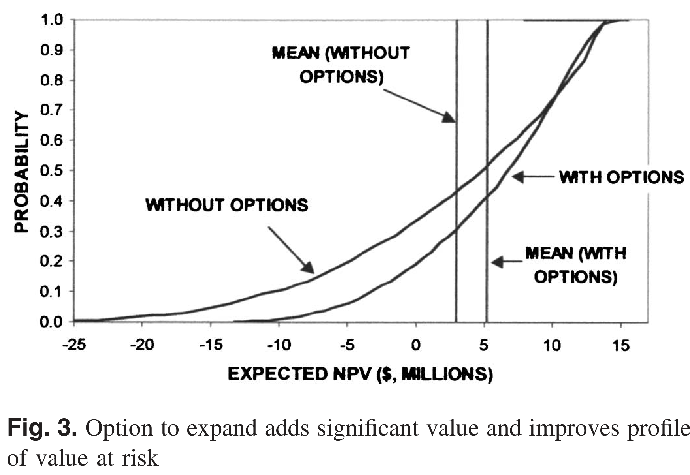
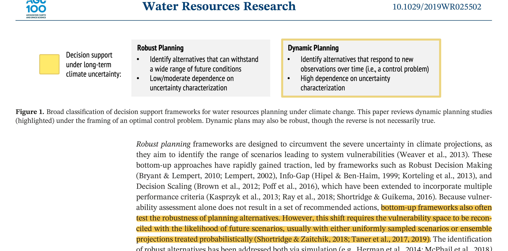
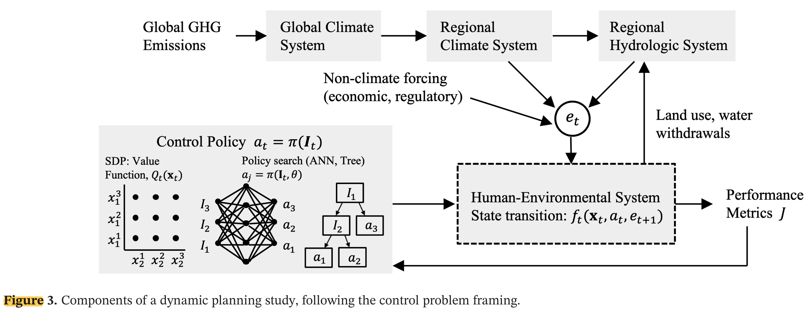
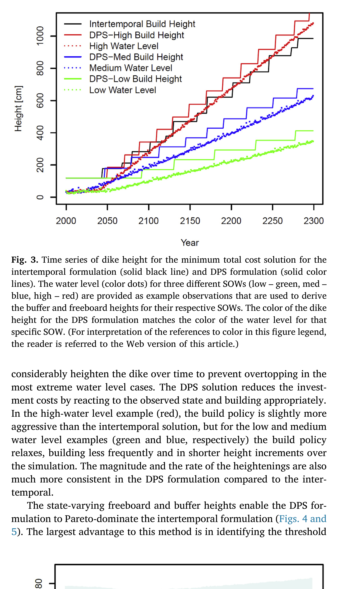
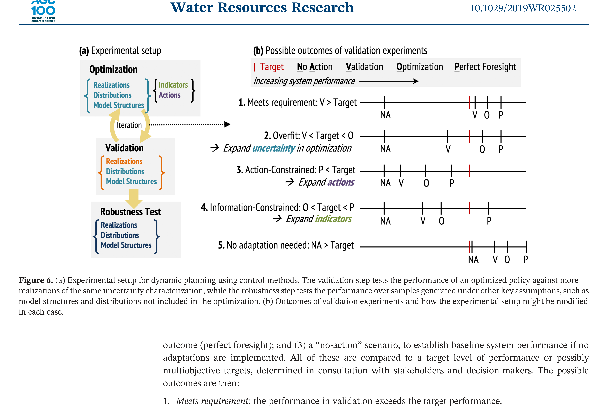

The Tagus River bridge (Lisbon, 1966) was built for road traffic. Rail was added in 1999 — because the original design reserved the option.
A satellite constellation (de Weck et al., 2004): staging deployment in phases rather than launching all satellites at once improved expected value by ~30%.
A parking garage in England reinforced its columns during construction. Extra floors were added later when demand grew.
What do these have in common?
Real Options: Vocabulary
A real option is the right — but not the obligation — to take an action in the future.
Option premium: upfront cost to preserve flexibility Reinforcing the columns; over-engineering the bridge
Option value: expected gain from having the option Higher expected NPV (ENPV), lower downside risk
You exercise the option only when conditions favor it — asymmetric upside
Options are valuable precisely because the future is uncertain. If you knew the future, you’d either always build the extra floors or never.
The Parking Garage
de Neufville et al. (2006) — paper you’ll discuss Wednesday.
Design choice: 4 floors with strong columns (option to expand) vs. 6 floors rigid
No flexibility
Flexible
Initial cost
$22.7M
$14.5M
Expected NPV
$2.87M
$5.12M
Minimum NPV
−$24.7M
−$12.6M
Maximum NPV
$13.8M
$14.8M
Option value ≈ $2.25M — the flexible design wins on ENPV, minimum NPV, and initial cost.

Figure 1: The flexible design shifts the entire VaR curve rightward: less downside, more upside. Source: de Neufville et al. (2006)
From Static to Sequential
So far in this course: choose one action \(a^*\) today, commit.
We learn over time — SLR observations will sharpen; storm records will grow.
Actions have lifetimes — a dike built to 3.5m today constrains what you can do in 2040.
Sequential decision making asks: what rule should govern each future choice, given what you observe at the time you choose?
Two Paradigms for Planning Under Uncertainty
Herman et al. (2020) classify decision support frameworks for water resources planning under climate change into two families.

Figure 2: We have already covered robust planning (Weeks 7–8). Today focuses on dynamic planning — the highlighted column.
The Control Problem: Components
Dynamic planning has four components: policy structure, uncertainty characterization, solution method, and validation.

Figure 3: The control policy \(\pi\) (left box) observes the system and selects actions \(a_t\). Forcing \(\mathbf{e}_t\) propagates through the climate-hydrology chain into the human-environmental system, producing performance metrics \(J\). From Herman et al. (2020).
State, Action, Forcing
Formal setup: at each time step \(t\),
Symbol
Meaning
Example
\(\mathbf{x}_t\)
System state
Dike height, reservoir storage
\(a_t \in \mathcal{A}\)
Action
Heighten by \(u_t\); expand; do nothing
\(\mathbf{e}_t\)
Stochastic forcing
SLR realization, storm surge, precipitation
\(J_t\)
Cost
Investment cost + expected damages
State transition:\[\mathbf{x}_{t+1} = f_t(\mathbf{x}_t,\; a_t,\; \mathbf{e}_{t+1})\]
Actions are chosen after observing \(\mathbf{x}_t\) — this is what makes the problem sequential.
Policy and Objective
The agent applies a policy\(\pi\) to observable information \(\mathbf{I}_t\):
\[a_t = \pi(\mathbf{I}_t)\]
\(\mathbf{I}_t\) can include current states, trend estimates, projections — anything observable.
Objective: minimize expected total cost over a planning horizon \(H\):
We are optimizing a rule, not a sequence of actions.
Different solution methods disagree on how to find the best \(\pi\) — that’s the rest of this lecture.
Why Is This Hard? Three Sources of Uncertainty
Herman et al. (2020) identify three distinct sources:
Sampling uncertainty — finite historical record; rare events underrepresented. 30 years of storm surge data doesn’t capture the full tail.
Exogenous hydroclimate uncertainty — cascade from emissions → GCMs → downscaling → hydrology. Dynamic changes (precipitation, storm tracks) far more uncertain than thermodynamic (SLR, snowpack).
Endogenous human-environment uncertainty — water demand, land use, institutional capacity. Often exceeds climate uncertainty on decadal planning horizons.
A policy optimized against a narrow set of scenarios may fail outside that envelope.
Solution Method 1: Open-Loop Control
The simplest approach: decide the full action sequence now, commit.
\[\{a_0,\; a_1,\; \ldots,\; a_{H-1}\} = \pi(t)\]
Actions depend only on time, not on observations.
Equivalent to extended static BCA: optimize once, execute forever
No feedback — same dike-heightening schedule regardless of whether SLR is fast or slow
To meet reliability constraints under all futures, must over-build for the worst case
Computationally simple; 300-year problem = 300 decision variables
Solution Method 2: Stochastic Dynamic Programming
Closed-loop: work backward from the terminal state using Bellman’s equation.
This is the scenario framework you’ve been using all semester — simulate forward, aggregate performance.
DPS in Action: The Levee Problem
Intertemporal (open-loop): prescribe annual heightenings \(u_1, \ldots, u_{300}\) at the start. Same schedule for every future.
DPS (closed-loop): observe the rate of water rise and variability around the trend. Apply a rule: “heighten by enough to restore the buffer, plus freeboard.”

Figure 4: Dike height trajectories under DPS (colored) vs. intertemporal (solid black), for three scenarios. Source: Garner & Keller (2018)
Indicator Variables: What Do You Observe?
The policy \(\pi(\mathbf{I}_t, \theta)\) is only as useful as the information in \(\mathbf{I}_t\).
An indicator = variable + timescale + aggregation window + transform “30-year moving average of annual inflow”“Rate of water rise over the prior 30 simulation years”
False positive: adapt when you didn’t need to — wasted investment
False negative: fail to adapt when you should — damages or failure
Short observation window → more false positives
Long observation window → more false negatives
Thermodynamic signals (SLR, snowpack) detectable sooner. Dynamic signals (precipitation trends) may take 50+ years to emerge.
Real Options Revisited
Now that we have the vocabulary: a real option is simply a policy with a rule.
The parking garage policy:
\[a_t = \begin{cases} \text{add a floor} & \text{if occupancy} > \tau \text{ for two consecutive years} \\ \text{do nothing} & \text{otherwise} \end{cases}\]
This is \(\pi(\mathbf{I}_t, \theta)\) with \(\theta = \tau\) and \(\mathbf{I}_t = \text{occupancy}_t\).
De Neufville found it by intuition and simulation. DPS finds it by optimization over \(\theta\) across many scenarios.
The option premium = cost of reinforcing the columns = cost to make this policy feasible.
Evaluating vs. Designing Policies
These are different tasks and are easy to confuse.
Evaluating a policy: given fixed \(\theta\), simulate over scenarios and compute costs. This is what robustness analysis in Weeks 7–8 did.
Designing a policy: search over \(\theta\) to minimize expected costs across the ensemble. This is what DPS does.
The quality of a designed policy depends on the quality of the uncertainty characterization used during optimization.
Validation: How Good Is Your Policy?
Test the optimized policy against scenarios not used in optimization. Five possible outcomes (Herman et al. (2020), Fig. 6):

Figure 5: NA = no action; V = validation; O = optimization; P = perfect foresight.
Summary
Real options: build in the right to act later; option value = ENPV gain from flexibility
Sequential decisions: optimize a policy \(\pi(\mathbf{I}_t, \theta)\) — a rule mapping observations to actions
Open loop: no feedback; must over-build to cover worst case
SDP: closed loop, exact, requires probability model + discretized state space
DPS: closed loop, scalable, evaluates policy over scenarios — the framework we’ve been using
Validation: evaluating ≠ designing; test out-of-sample or risk overfit to your training scenarios
Wednesday: Fuad leads discussion of Garner & Keller (2018) and de Neufville et al. (2006).
Note: there is a known unit error in Garner & Keller (2018) — storm surge is off by a factor of 10, over-weighting SLR. Methods and qualitative findings remain valid.
References
Garner, G. G., & Keller, K. (2018). Using direct policy search to identify robust strategies in adapting to uncertain sea-level rise and storm surge. Environmental Modelling & Software, 107, 96–104. https://doi.org/10.1016/j.envsoft.2018.05.006
Herman, J. D., Quinn, J. D., Steinschneider, S., Giuliani, M., & Fletcher, S. (2020). Climate adaptation as a control problem: Review and perspectives on dynamic water resources planning under uncertainty. Water Resources Research, e24389. https://doi.org/10.1029/2019wr025502